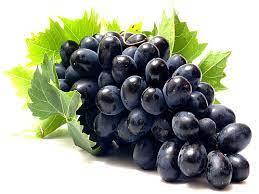
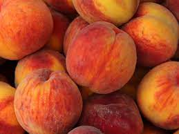
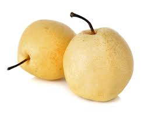
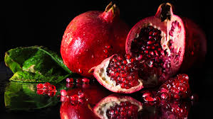
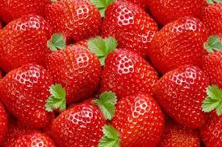

Apples

Price:180
May lower cholesterol. Apples contain pectin, a natural fibre found in plants. May protect against diabetes. Apples are low on the glycaemic index (GI) thanks to their fibre content.May prevent obesity. May protect against heart disease.May be beneficial for bone health.
Grapes
Price:200
Grapes are a good source of potassium, a mineral that helps balance fluids in your body. Potassium can help bring down high blood pressure and lower your risk of heart disease and stroke. Most people don't get enough of this nutrient, so eating grapes can help fill the gap.
Peach
Price:220
Summer peaches are one of nature’s best inventions. They’re soft and sweet, smell divine, taste good cooked or fresh, and they’re chock-full of vitamins, minerals and antioxidants..Peaches are a type of stone fruit, along with plums, apricots, cherries and nectarines. As the name suggests, stone fruits have a stone-like central pit. Peaches come in white and yellow varieties and offer several nutritional payoffs.
Pear
Price:220
Pears are sweet, bell-shaped fruits that have been enjoyed since ancient times. They can be eaten crisp or soft. They’re not only delicious but also offer many health benefits backed by science.Here are 9 impressive health benefits of pears.Pears come in many different varieties. Bartlett, Bosc, and D’Anjou pears are among the most popular, but around 100 types are grown worldwide
pomegranate
Price:220
What happens if we eat pomegranate daily? Eating pomegranates as a whole can have anti-inflammatory effects and can protect a human body from various diseases like type-2 diabetes, and obesity. 2. Regular consumption of pomegranate helps in improving gut health, digestion, and keep bowel diseases at bay.
Strawberry
Price:220
The tiny strawberry is packed with vitamin C, fiber, antioxidants, and more. The heart-shaped silhouette of the strawberry is the first clue that this fruit is good for you. These potent little packages protect your heart, increase HDL (good) cholesterol, lower your blood pressure, and guard against cancer.